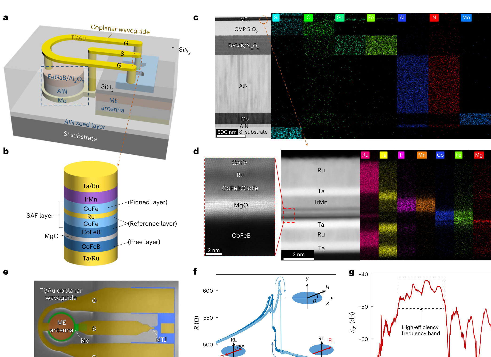
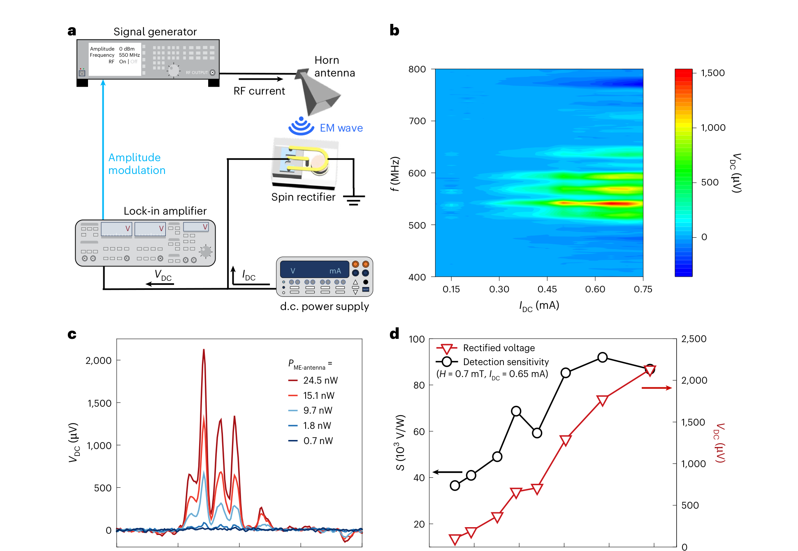
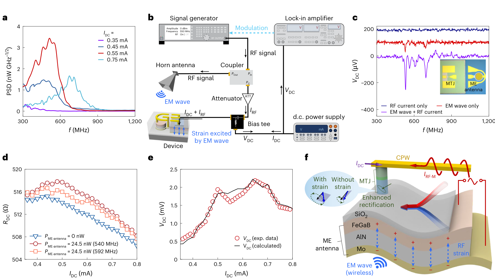
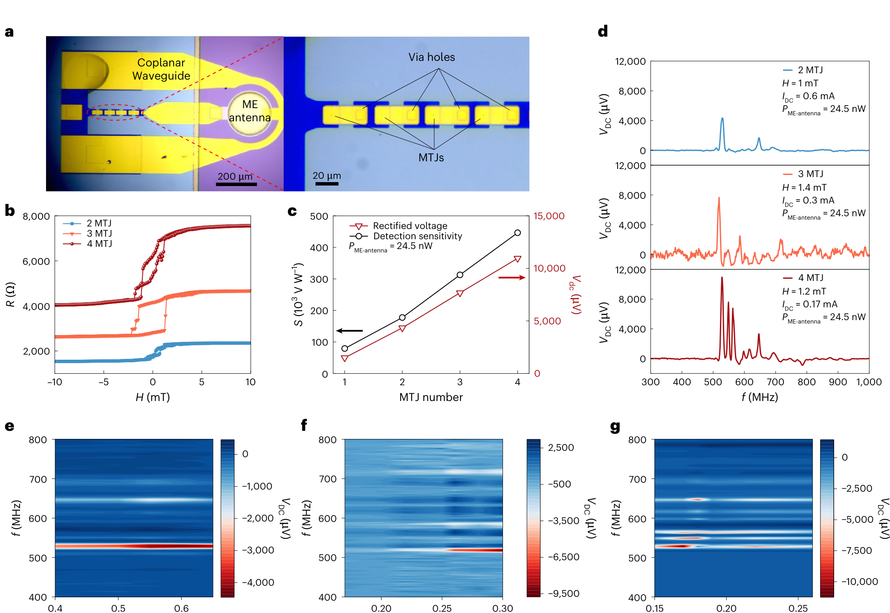

FIG. 1
器件结构：CMOS 后端兼容的 ME 天线 + MTJ
先确认它不是松散拼接：材料堆栈、截面和片上互连都由显微证据支撑。

这篇论文把磁电天线的应变、电压与磁隧道结中的非相干磁化动力学耦合起来，让同一个纳米器件同时接收无线微波并整流。亮点是高灵敏度与 0.4 mm² 级面积，但“紧凑”指探测头，不代表整套测试系统无偏置、无磁场或宽带。
图像来自用户提供的原始论文 PDF，仅截取用于个人研究解读的图体并标明出处；不分发整篇 PDF。原文为出版方专有许可内容，版权归作者与 Springer Nature。
作者把约 200 μm 的磁电（ME）天线与 440×250 nm 的磁隧道结（MTJ）单片集成：入射微波既在 MTJ 中诱发射频电流，又通过磁电层产生应变并调制自由层磁各向异性；二者在直流偏置驱动的非线性磁阻中相乘，得到增强的直流整流输出。单 MTJ 灵敏度超过 90 kV W⁻¹、NEP 约 3 pW Hz⁻¹/²；四个串联 MTJ 达约 446 kV W⁻¹和约 11 mV 输出。
先确认它不是松散拼接：材料堆栈、截面和片上互连都由显微证据支撑。

这张图给出“接收端灵敏”的主结果，但必须和直流偏置、频率与天线接收功率一起读。

作者用隔离测试把直接射频电流、单独无线应变和两者叠加分开，证明增强项来自耦合而非简单相加。

串联提高总整流电压且不显著增加 ME 天线占地，是论文“scalable”的直接实验依据。
